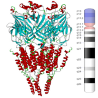

Latest
2019
- Excited to be a co-author of this new pre-print, Hunters, busybodies, and the knowledge network building associated with curiosity, June 2019!
- Advanced to PhD candidacy, June 2019! Thank you to my advisors and committee, Sudeep Bhatia, Anna Jenkins, Konrad Kording, and Michael Platt.
- Co-authored manuscript in press at Journal of Complex Networks, Evolution of semantic networks in biomedical texts, May 2019.
- Received travel award to present at the Sackler Colloquium, Brain Produces Mind by Modeling, April 2019.
2018
- Began the Language and Communication Sciences Certificate Program, part of the MindCORE's initiative in Integrated Language Science and Technology, December 2018.
- Joined the Complex Systems Group (PI: Danielle Bassett) and Psychiatric and Developmental Imaging Laboratory (PI: Theodore Satterthwaite), August 2018!
|
Research
My ongoing research addresses questions like:
- What does the evolution of brain metabolism and architecture tell us about how we process information?
- What does the evolution of animal foraging tell us about how humans practice curiosity for information?
- How do differences in information search and processing contribute to differences in mood, attention, and learning?
- How does dysfunctional information search and processing contribute to mental illness?
Broadly, I'm interested in problems intersecting computational neuroscience, complex systems, cognitive science, psychiatry, development, genetics, philosophy of mind, and philosophy of science.
|
Publications
|
|
7 T MRI reveals hippocampal structural abnormalities associated with memory intrusions in childhood-onset schizophrenia
Dale Zhou,
Siyuan Liu,
Xueping Zhou,
Rebecca Berman,
Diane Broadnax,
Peter Gochman,
Judith Rapoport,
Adam Thomas
Published in Schizophrenia Research, 2018
Presented at Julius Axelrod Symposium 2017
Conference Abstracts at Society for Neuroscience 2016, American College of Neuropsychopharmacology 2016, Society for Biological Psychiatry 2017
The hippocampus and its small subregions are areas of the brain that play an integral role in memory. Our study leveraged new, powerful brain imaging methods to study these small subregions and their relation to memory impairment in childhood-onset schizophrenia patients. We found evidence of disrupted morphometric structure (i.e. tissue contraction) associated with impaired memory. If further research corroborates these findings, the specific structural links to memory impairment could inform targeted clinical interventions.
|
|

|
15q13.3 duplication in two patients with childhood-onset schizophrenia
Dale Zhou,
Peter Gochman,
Diane Broadnax,
Judith Rapoport,
Kwangmi Ahn
Published in American Journal of Medical Genetics Part B: Neuropsychiatric Genetics, 2016
Conference Abstract at Society for Biological Psychiatry 2016
We provided evidence of a new genetic mutation associated with childhood-onset schizophrenia; specifically, the duplication of the 15q13.3 chromosomal region. Our findings hold import to affected families and their genetic counselors, for whom incomplete penetrance and variable expressivity of these mutations offer substantial challenges. In previous research, the affected genes normally encode neuronal channel receptor proteins which were related to schizophrenia symptoms when mutated. Further research on gene dosage and downstream effects of this mutation may enhance understanding of contributing factors to schizophrenia and improve assessments of genetic risk.
|
|